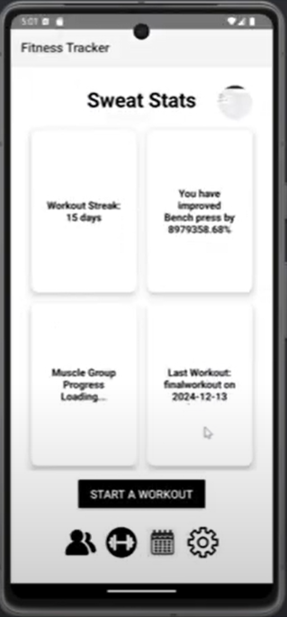

Designed and developed a social media platform centered around
daily gratitude sharing and community engagement. Created an
intuitive Android front-end using Java and XML in Android Studio,
focusing on user-friendly interactions and aesthetic design.
Engineered the back-end in Java using IntelliJ, integrating with a
MySQL database for secure and scalable data management. Built and
tested RESTful APIs, ensuring reliable client-server
communication, using Postman for thorough endpoint validation.
Employed Git for version control, maintaining clean commits and
collaborative development practices. Prioritized clean,
maintainable code through consistent testing and debugging
strategies, delivering a smooth user experience.
November 2024 - December 2024

Led the design and development of a microcontroller-based robot
capable of autonomously navigating a predefined, unknown course.
Managed a team of six by streamlining collaboration through clear
task delegation, regular meetings, and consistent communication.
Designed and implemented control algorithms in C to process data
from integrated sensors—including ADCs, ultrasonic distance
sensors (ping), and servos to accurate movement and real-time
obstacle avoidance. To support development and debugging, built a
custom Python-based GUI that visualized sensor data and provided
live system feedback. System performance was refined through
iterative testing and calibration, improving both sensor accuracy
and motor coordination for reliable autonomous navigation.
August 2024 - December 2024

Demo
|
GitHub Repository
Sweat Stats is a mobile fitness tracking application built to help
users log workouts, track progress, and set fitness goals through
an intuitive and responsive interface. As a front-end developer on
a team of four, I collaborated closely with another front-end
engineer and two back-end developers to bring this project to
life.
I led the development of the user interface using Java and XML in
Android Studio, prioritizing a clean layout, smooth navigation,
and mobile responsiveness. I structured the front-end components
with modularity and reusability in mind, enabling faster
iterations and easier maintenance. My responsibilities also
included connecting the UI with real-time data services and
ensuring smooth integration with the backend through well-defined
APIs.
To support real-time features, I implemented WebSocket connections
that allowed dynamic syncing of user data (such as workout logs
and performance stats) across sessions. I also integrated
HTTP-based CRUD operations to fetch, update, and delete user
records, enabling seamless communication between the client and
server.
I contributed to the DevOps pipeline by configuring CI/CD
workflows to automate builds, testing, and deployment. This
significantly enhanced our team's development velocity and helped
catch integration issues early.
Through this project, I gained hands-on experience in
collaborative software development, real-time systems integration,
and building production-ready mobile interfaces with performance
and user experience in mind.

Languages: Java (Strongest), C (Proficient),
Python, JavaScript, ARM
Web: HTML, XML, JSON, CSS
Embedded: Verilog, Logic Circuits,
Microcontrollers
Languages: English (Fluent), French (Beginner)

Bachelor's in Software Engineering
Graduation: Fall 2027
Master's in Artificial Intelligence
Graduation: Fall 2028

C'est Le Crepe Food Trailer
Co-led team while launching new business. Managed operations, food
quality, and customer service.